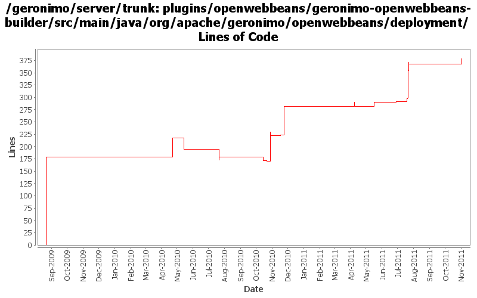

[root]/plugins/openwebbeans/geronimo-openwebbeans-builder/src/main/java/org/apache/geronimo/openwebbeans/deployment

| Author | Changes | Lines of Code | Lines per Change |
|---|---|---|---|
| Totals | 33 (100.0%) | 683 (100.0%) | 20.6 |
| dblevins | 6 (18.2%) | 230 (33.7%) | 38.3 |
| djencks | 11 (33.3%) | 183 (26.8%) | 16.6 |
| xuhaihong | 9 (27.3%) | 142 (20.8%) | 15.7 |
| genspring | 5 (15.2%) | 114 (16.7%) | 22.8 |
| gawor | 2 (6.1%) | 14 (2.0%) | 7.0 |
GERONIMO-6204 Decouple OpenWebBeans from web container
44 lines of code changed in 1 file:
Update codes due to getInjectionTargets return value type changed to Set
1 lines of code changed in 1 file:
Final tweak for GERONIMO-6090
0 lines of code changed in 1 file:
More tweaks to GERONIMO-6090 Attempting to get the algorithm to work
24 lines of code changed in 1 file:
Tweak to GERONIMO-6090. The lib directory is never part of the jarFile name
1 lines of code changed in 1 file:
GERONIMO-6090 Limit web beans annotation scan scope
52 lines of code changed in 1 file:
GERONIMO-6090: Don't scan for EE Injections in a CDI application in metadata complete web module
12 lines of code changed in 1 file:
Update a variable name and reset the original classfinder
6 lines of code changed in 1 file:
GERONIMO-6038: testNonContextualSessionBeanReferenceIsIntercepted(org.jboss.jsr299.tck.tests.interceptors.definition.enterprise.nonContextualReference.SessionBeanInterceptorOnNonContextualEjbReferenceTest)
Ensure CDI beans are scanned for @EJB references
14 lines of code changed in 1 file:
GERONIMO-5050 Start of always using openejb for owb
2 lines of code changed in 2 files:
GERONIMO-6022 Support use the @Resource(name="java:global/env/abc") for environment entry injection
2 lines of code changed in 1 file:
recommit changes for GERONIMO-5893 to seperate the owb-jsf module out of default openwebbeans env.
12 lines of code changed in 1 file:
Revert the changes for GERONIMO-5893, it caused deployment failures
4 lines of code changed in 1 file:
GERONIMO-5893 Use a separate environment to host the JSF plug-in dependency, and only adds it to the environment if beans.xml is found
12 lines of code changed in 1 file:
XBEAN-162 update to genericed xbean-finder apis
3 lines of code changed in 1 file:
GERONIMO-5050 at the moment the web/ejb integrations treat every app as a web beans app so the deployer MBE should too
5 lines of code changed in 1 file:
GERONIMO-5050 OWB integration set up injection of ee resources with naming builders. Also provide a more likely classloader for proxies
64 lines of code changed in 2 files:
Only merge the openwebbeans environment if required
17 lines of code changed in 1 file:
GERONIMO-5050 accidently committed this non-working experiment
0 lines of code changed in 1 file:
GERONIMo-5050 bind BeanManager in jndi
64 lines of code changed in 2 files:
GERONIMO-5050 mostly a thread/module based singleton scheme for OWB, and a bunch of other tweaks
11 lines of code changed in 1 file:
GERONIMO-5050 commit a slightly modified version of jarek's patch which helps get some of the jcdi tck passing
34 lines of code changed in 1 file:
make sure the deployer doesn't do anything right now
7 lines of code changed in 1 file:
enable (non-working) openwebbeans plugin in build just to test dependencies, etc.
7 lines of code changed in 1 file:
Cleanup some owb dependencies.
5 lines of code changed in 2 files:
GERONIMO-5219 Java EE Injection annotation scanning for 299 beans, make the sample start to work.
97 lines of code changed in 2 files:
GERONIMO-5057 Use those xmlbeans generated by JAVA EE 6 schema files
4 lines of code changed in 1 file:
Beginning of an OpenWebBeans integration
179 lines of code changed in 1 file: